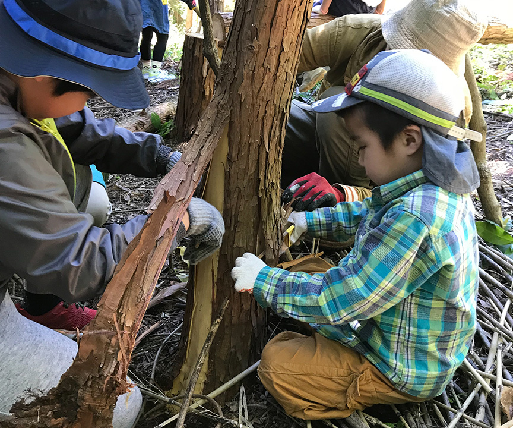

特別協力
Partnership
森と踊る 株式会社 - The company "Dancing with the forest"
森と踊る株式会社は、高尾の森に拠点を置く、500年先の人と森の共生を実現する実践者の集いです。
「皮むき間伐」と呼ばれる間伐方法は、立木を、皮をむいて立ち枯らせ、2 年ほど天然乾燥させて、その後、伐木します。
急激な人工乾燥を必要としないので、天然の油分が残留し、粘り強く、香り高い木材を製材することができます。
女性や子供でも間伐を体験できるため、人と木、街と森を繋ぐフィールドワークとして近年注目を集めています。
-
The company "Dancing with the forest" is a gathering of practitioners who realize symbiosis with the forest 500 years in the future.
In the thinning method called "peeling thinning", standing trees are peeled off, dried for about 2 years, then logged.
Because it does not require rapid drying, natural oil remains and you can get a tenacious and fragrant lumber.
As women and children can experience thinning, they are attracting attention recently as field work connecting people and trees, town and forest.
